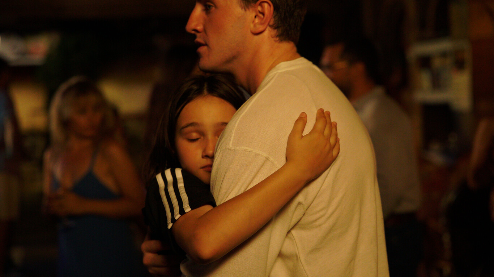
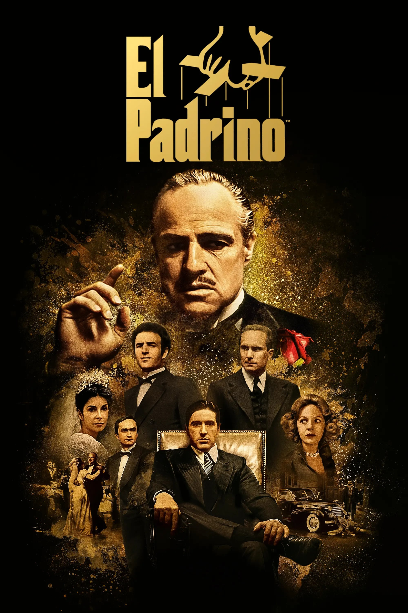
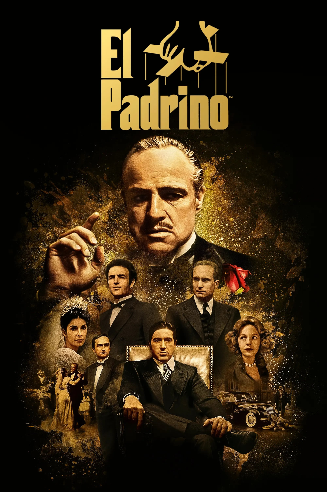

Críticas
"Decision To Leave" de Park Chan-wook, un thriller y una historia de amor

Los espíritus de la isla (The Banshees of Inisherin) de Martin McDonagh
Aftersun: La ópera prima de Charlotte Wells

The Fabelmans: la película más personal de Spielberg
Actualidad
Las series de HBO que hay que ver
Todas las nominaciones a los Oscar
The Last of Us: un drama apocalíptico
Las películas más esperadas de 2023
FOTOGRAMAS
UNA REVISTA IMPRESA DEDICADA AL ARTE Y A LA CULTURA DEL CINE
Creada y publicada por Luz Encendida. Recibí tres números al año. Disponible en todo el mundo con la suscripción a la revista.
De interés
El Top 1000 de Mubi, la plataforma que eligen muchos
 
